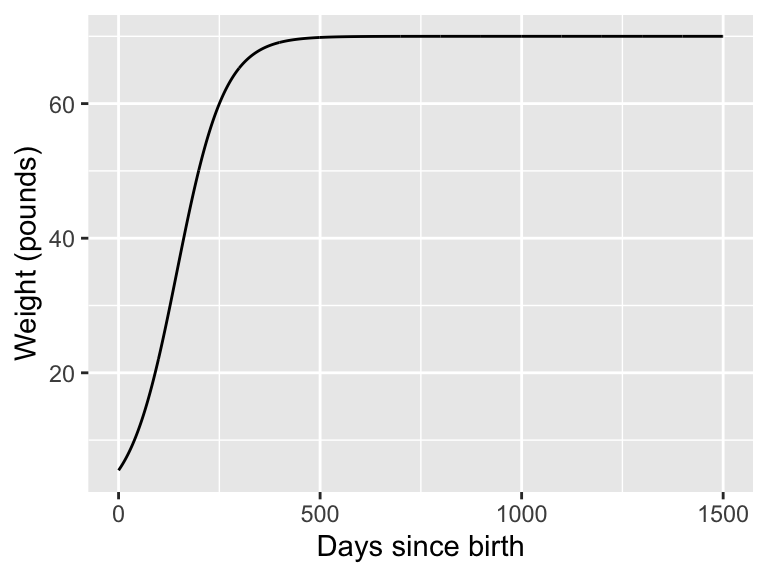
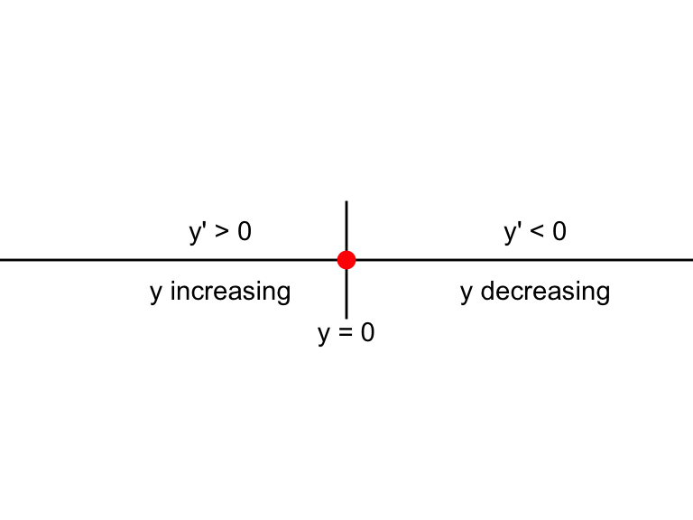

3.2 The Law of Mass Action
Notice in the previous section that the interaction between the lynx and the hare was of the form bHL - meaning you needed both positive values of H and L for the interaction to continue. This law states that the rate of a change is directly proportional to the product of the populations.
This assumption of the law of mass action is also commonly used in chemical reactions - especially in modeling enzyme dynamics. For example let’s say you have a substrate A that reactions with enzyme B to form a product S. Perhaps you might have seen this represented as a reaction equation:
\[\begin{equation} A+B \rightarrow S \end{equation}\]
How we would write the product of formation, or \(\displaystyle \frac{dS}{dt}\) is the following:
\[\begin{equation} \frac{dS}{dt}= kAB, \end{equation}\]
where \(k\) is the proportionality constant or the rate constant associated with the reaction. If we wanted to represent this as a schematic we would have the following diagram:

We could also consider if there was a constant decay of the substrate, which we might revise our diagram to the following:
